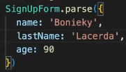

React Hook Form + ZOD
ReactHookForm
É uma das principais bibliotecas quando falamos da construção de formulários em React. Uma das principais diferenças é que ele já nos proporciona um ecossistema com uma série de funcionalidades que teriamos que fazer manualmente, como validações, verificações. Em maneira resumida, É uma forma mais prática de criar formulários.
Para instalar: npm i react-hook-form.
Tendo a biblioteca instalada já podemos começar a fazer os primeiros formulários. A primeira coisa que precisamos entender é que com a biblioteca quase tudo é feito a partir de HOOKS.
Intro Schema Validation
Até o ponto anterior, precisamos criar os types para os fields, depois exibir o formulário, depois em cada campo definir suas regras, além de dizer que tem o campo específico, dizer quais as regras do campo específico em oturo local. Quando trabalhamos com Sechema Validations conseguimos colocar isso tudo em apenas um lugar. Nesse local entra o ZOD. Com ele, criamos um esqueleto de um formulário, dados de uma função etc. Básicamente criamos um padrão específico e depois batemos com algum tipo de dado. Também podemos usa-lo para FORMS, no qual criamos tanto um padrão para os fields do form, quanto também para os tipos de dados.
Instalar: npm i zod.
Para integrar Install: npm i hookform/resolvers
Acima podemos ver um type, e comentado quais seriam as regras que iriamos aplicar no react hook form para cada field. Com o ZOD, conseugimos construir tudo isso em apenas um único lugar. Por padrão, todos os campos que criamos são OBRIGATÓRIOS. Logo, qualquer campo que não queiramos que seja obrigatório, precisa ser informado. Abaixo o type acima feito c/ Zod.
Também podemos dentro do prórpio Schema definir as mensagens que serão exibidas quando tivermos algum error:
O próprio zod, também nos permite Testar um objeto, para saber se ele está 'dentro' das especificações, que é o Parse. Na qual ali dentro, jogamos algum objeto, e ele vê se está OK ou não.
Agora que já aprendemos a criar um padrão completo com o ZOD, inclusive com suas regras, ele também nos permite gerar um Type pronto, para que possamos utilizar dentro do React Hook Form, para isso utilizamos um recurso chamado Inferencia. Dessa forma no exemplo abaixo, SignUpObject já estará pronto para ser utilizado como um Type em qualquer lugar de sua aplicação.
Abaixo uma série de Funcionalidades do ZOD:
Primitivos:
São os principais tipos de valores que podemos colocar dentro do objeto ZOD. O mais utilizado será a String porém também temos Number, Boolean, Date, Undefined . Esses são os principais.